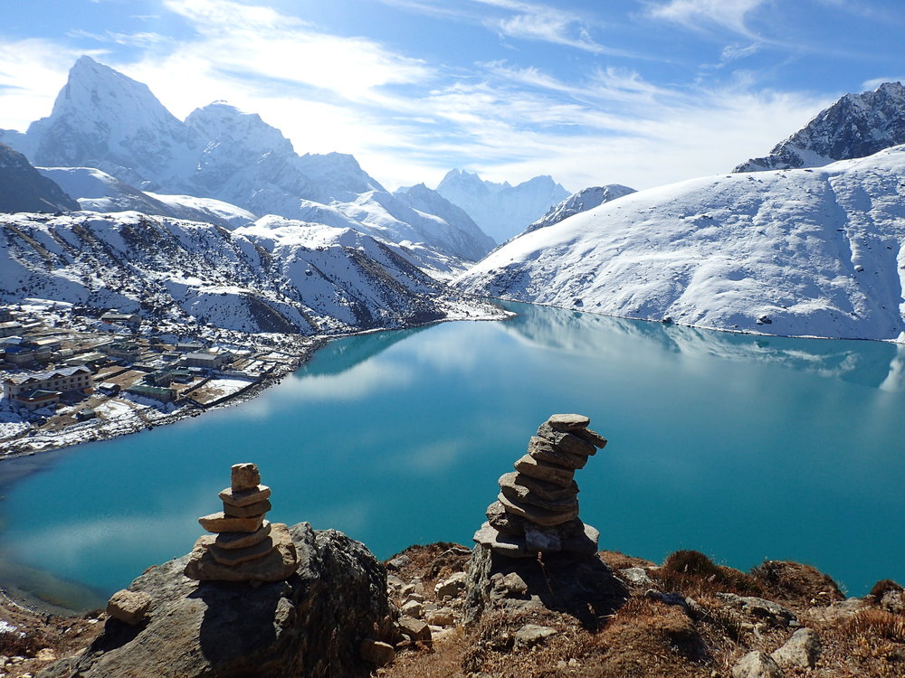
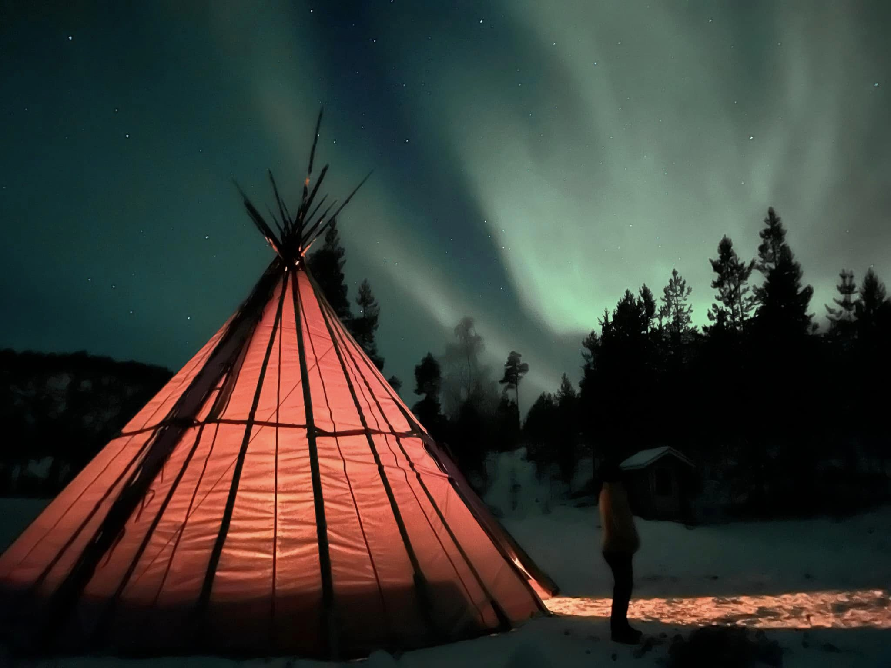
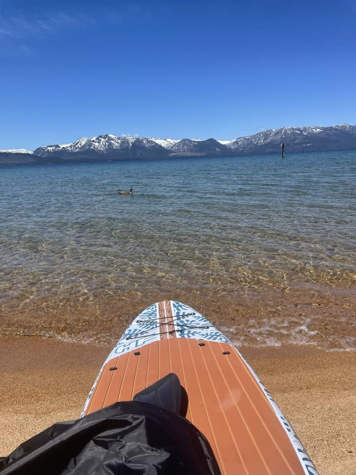
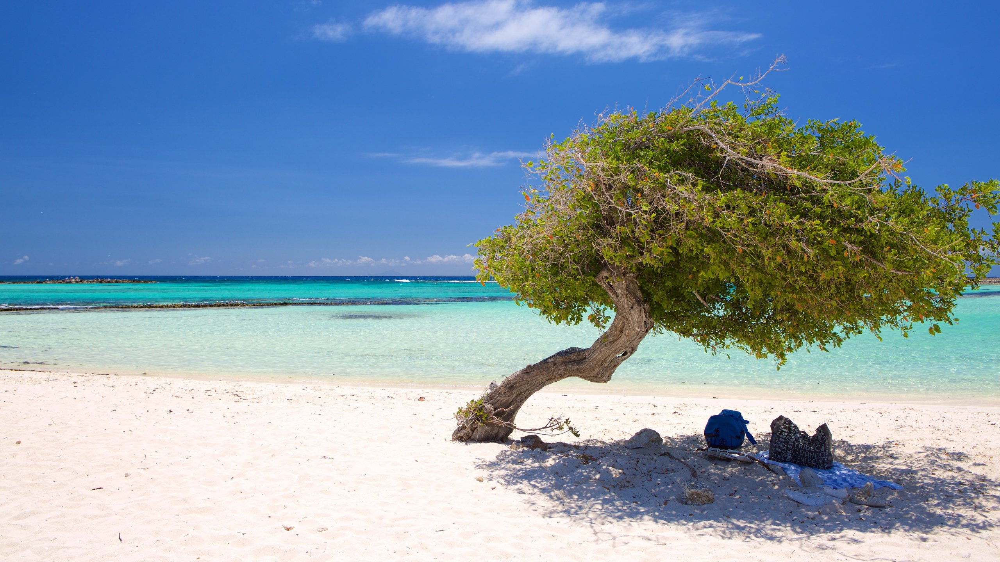

2022 Adventures
Gokyo Lakes, Nepal Saariselkä, Finland South Lake Tahoe, USA
Gokyo Lakes- Nepal
If you want to reach Gokyo Lake, Stay in Namche 3-4 days minimum for the best acclimatization, making some tours to Monk (4000), Khumjung (3800), Tengboche. For a beautiful 3 day trek spend 1 night - Dole, second night - Macchermo. There are 6 lakes there. Usually tourists see only first 3 of them, because Gokyo village situated on the shore of 3-d lake. But 4-th, 5-th and 6-th lakes are fantastically beautiful and I strongly recommend you to visit them. * 4-th lake is just 1 hour to go by the path from the Gokyo village up. It's very easy and you can do it yourself without any guide. *5-th lake is 2 hours more up, and I recommend you to take a guide to go there, because it's quite easy to loose way back, especially if fog will come. *6-th lake - is extremely impressive, you will remember it for all your life. It's 2 more hours. The altitude there is only 5300 meters, so if you spend 3-4 days in Gokyo village and have a normal acclimatization, it's not problem. Be VERY attentive with acclimatization. Don't rush to go up if you feel yourself not good - it's really dangerous. I think, that if you want to make a safe trip to Gokyo lakes, you need around 20 days for all the tour from Lukla to Lukla, not less.
Saariselkä, Finland
Saariselkä is a resort village in northern Finland. It's a gateway to the trails and ski areas of mountainous Urho Kekkonen National Park. The village's Destination Northernmost Europe exhibition has a panorama theater with films on the region’s plant and animal life, including reindeer. To the north, the lakefront Sámi Cultural Center Sajos includes a craft shop and a library devoted to the indigenous Sami people
S. Lake Tahoe
South Lake Tahoe is a California resort city on Lake Tahoe, in the Sierra Nevada mountains. It’s known for nearby ski resorts and beaches, like El Dorado Beach, with its picnic areas. The city’s restaurants and bars merge with the casinos of adjacent Stateline, Nevada. Van Sickle Bi-State Park has wooded trails and lake views. West of the city, Emerald Bay State Park includes Vikingsholm, a 1929 Nordic-style mansion.
Eagle Beach, Aruba
Aruba is much more than a Caribbean paradise. Our world-class beaches, always-perfect weather and warm and welcoming culture are only a part of what makes Aruba unique. The feeling you get when you step on our sunny shores that stays with you long after you depart is what truly sets us apart - we call it the Aruba Effect. And it all starts here, on One happy island.